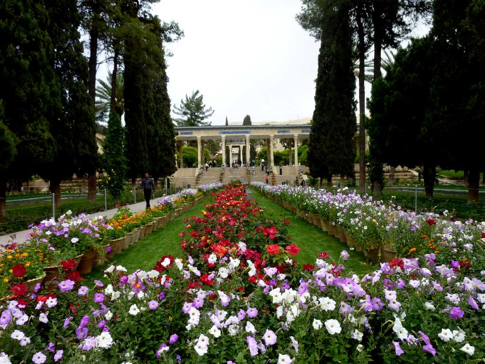
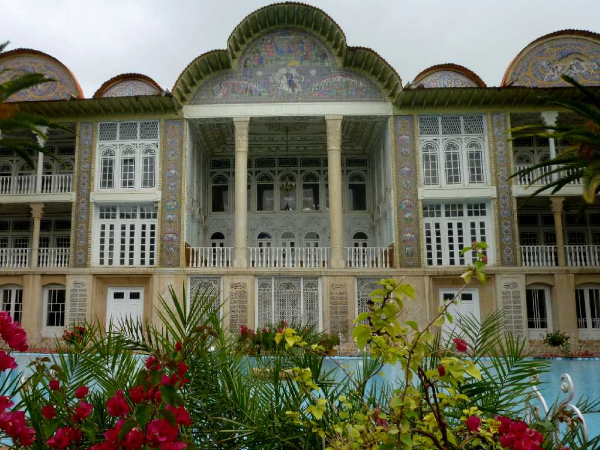
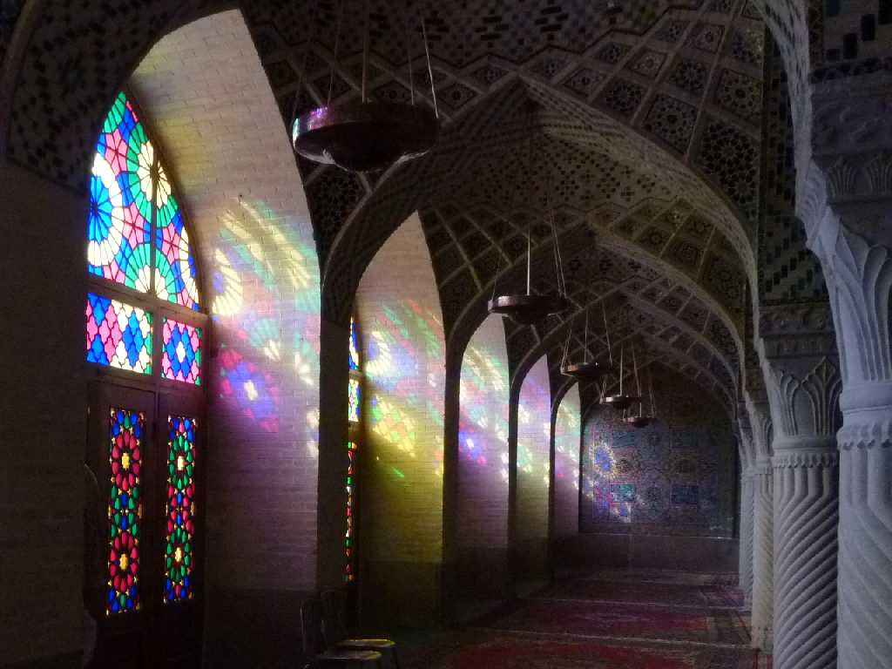

Aramgah-e Hafez Shiraz
１４世紀のペルシャ古典詩人ハーフェズが眠る廟 ハーフェズはコーランの暗唱者を意味する

Eram Garden Shiraz
１８世紀末のガージャール朝を代表する建築様式のエラム宮殿があるシラーズ大学附属植物園

Nasir-ol Molk Shiraz
１８７２年から１８８４年に創建されたステンドグラスとピンクを基調としたタイルが美しい別名ローズモスク